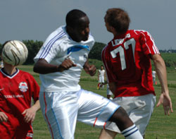
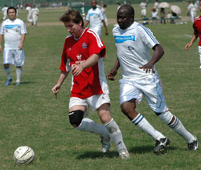

|
Misato, Sun 3rd Sept. Incredible as it may seem to anyone who witnessed BEFC's struggles in 2005, when they shipped so many goals that the referee had to put an assistant with one of those little thumb-operated click-counters by the Embassy goal just to keep score, the Reds finished TML3 strong, going undefeated in 2006. A few friendlies against soft opposition kept the streak going through the summer months. But could it last into the new season? Especially against TML newcomers, the - presumably hungry -Lions?
As-yet-undefeated BEFC captain Tim Letheren, perhaps sensing this could be the day his "Scouse Zen" magic finally wore thin, was absent, so Fernando "Peron" Bermudez took the helm. An Argentinian captaining the British Embassy? The Lions must have fancied their chances. Especially as the AVERAGE age of the BEFC back 5 at kick-off was - wait for it - 43 (forty-three). Yes, that 2006 red is mature and full-bodied, all right.
Lions certainly showed intent. Straight from the kick-off, Abubakar Birkia - a man who clearly has skills to burn - dribbled past three BEFC players before putting a 40-yard lob attempt over the crossbar by 12 inches. After that, however, BEFC settled into a rather comfortable groove. Lots of passing, calm defence from the uber-veterans Sendo, Keith, Gary and Ryan, and strength and pace up front from Steve "Crouchie" Lidbury and new-boy Eddie. An accurate cross from the left by Biffa Bacon, he of the cultured left foot (well, one part of him has to be), half-cleared by Lions, and a neat finish from Eddie: 1-0. Then an incisive ball down the right freed Kotaro, whose first time cross (yes, you read it right: "first time cross" and "Kotaro" in the same sentence) was blocked by a Lions' paw. A whack-it-straight-down-the-middle-and-hope-the-keeper-dives-out-of-the-way-oh-good-he-has-done penalty from Steve made it 2-0.
Then the inevitable BEFC wobble. Out with the football, in with the hack-and-hoof which served them so poorly in Division 1. Lions pushed forward and earned a debatable penalty as Fernando raised his arm to protect his face from a free-kick. Omar smartly sent the keeper the wrong way to get Lions right back in it, 2-1. At half-time, BEFC trudged to the sidelines, bickering, while their captain busied himself debating the ball-to-hand, hand-to-ball law with unimpressed ref Quentin.
The second half was a typical competitive game of Division 2 football between two fairly evenly-matched teams. Lions pushed and probed but - credit to a hard-working BEFC defence - never managed a shot on goal. The only drama in the BEFC area was predictably left to keeper Lever, whose retaliation after an aerial foul earned a - possibly charitable - yellow card. Takashi's superb cameo down the left side and Taka's hard work in the middle helped BEFC to get over their bad patch and finish strongly. Crouchie rattled the bar from a beautiful whipped-in cross by Andy "temper temper" Drought, then ten minutes later, Biffa's half-blocked shot found its way to Andy, who thumped it away with the last kick of the game.
Verdict: new season, sun, a good grass pitch, an excellent ref: hey, what's not to like? BEFC - who had a few key players missing today - might just enjoy their TML4 campaign. So long as they remember that football seasons and calendar years aren't the same thing. As for Lions, this must have been a tough introduction to Division 2, but they look like a team with enough quality to do more than just survive.
Report – "Diplomatic Sources"
|